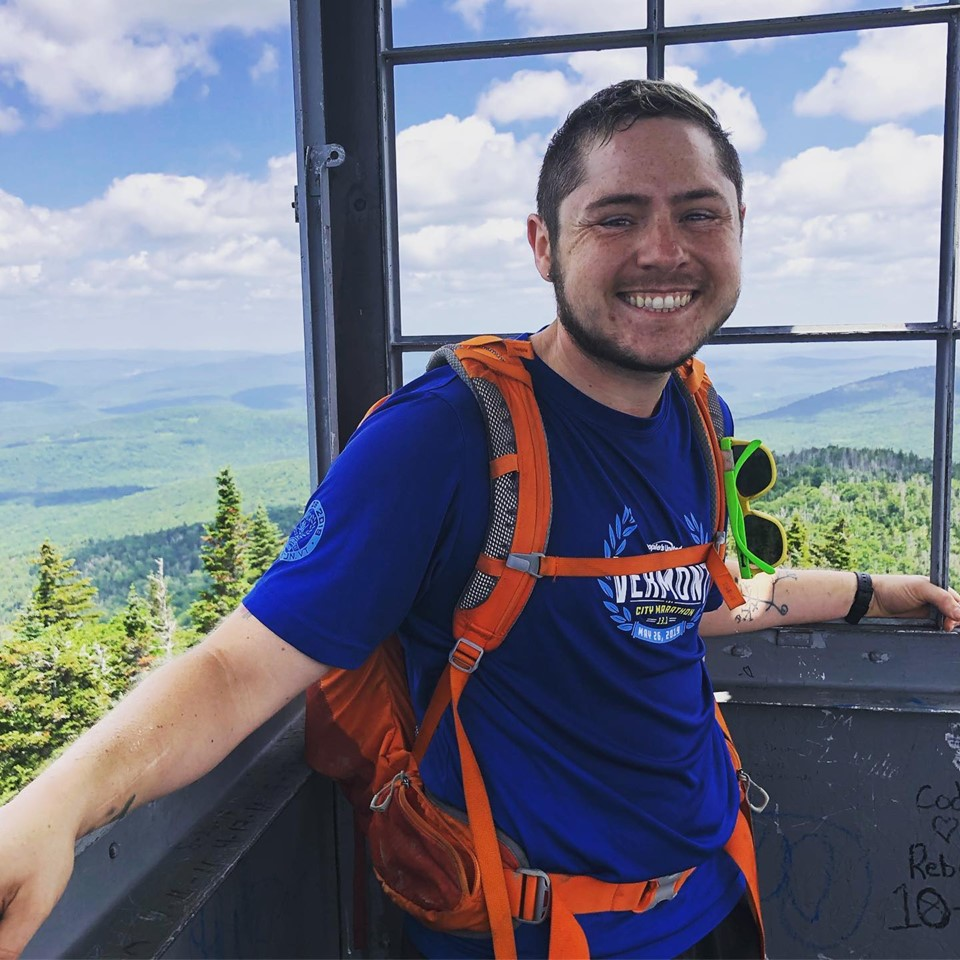
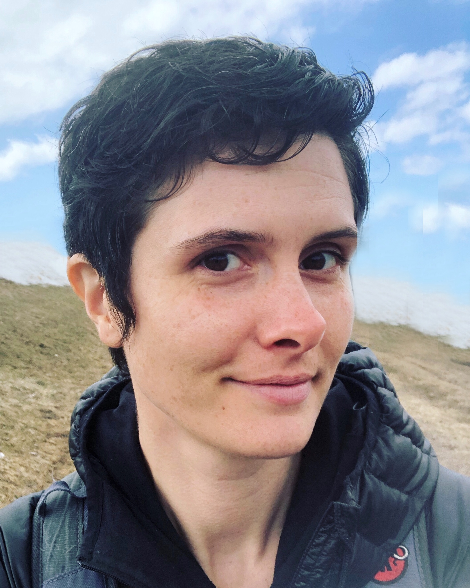
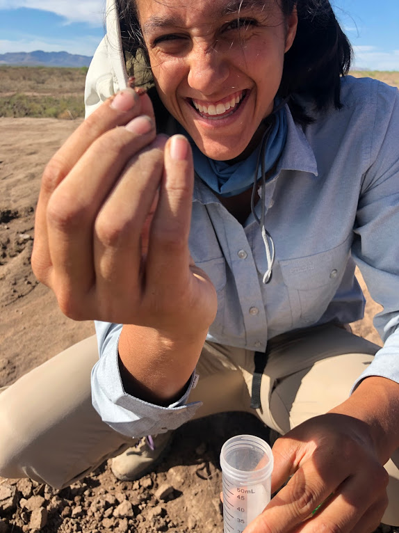
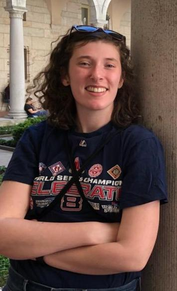

I am broadly interested in how organisms respond to their social and physical environment, with a particular emphasis on the evolution of social behavior in the eusocal insects. What kinds of selective forces cause sociality to evolve, and once evolved, what are the consequences for individual behavior, group function, population dynamics, and ecological interactions? My primary study systems include intraspecific variation in queen social behavior in the desert ant species Veromessor pergandei, which is one of the only species known to display three alternative social systems across its range. I have also spent a large part of my career investigating how social structure impacts the evolutionary outcome of interspecific hybridization in two ant genera, Pogonomyrmex and Solenopsis. In recent years, my collaborators and I have been exploring how social insects are likely to respond to projected climate change through physiological acclimation and adaptation. This has led me to the broader question of whether and how these traits evolve across space and time, and the molecular mechanisms that drive plasticity in thermal tolerance. I am currently PI of a multi-institutional collaborative grant to investigate epigenetic mechanisms and evolution of thermal plasticity in Drosophila melanogaster, a species that is not all that social but has a wealth of genomic resources available to characterize and manipulate mechanisms of interest.

I am a research assistant broadly interested in plasticity, the ability of organisms to produce altered phenotypes in response to environmental stimuli. More specifically, I am investigating the underlying epigenetic and transcriptomic basis of thermal acclimation in Drosophila by comparing gene expression differences in flies reared at high and low temperatures and later subjected to extreme heat or cold stress.
Amanda Northrop, Ph.D Candidate, Research Assistant

I study aquatic microbial communities - how they change as a result of organic matter enrichment and how such changes can be applied to management of eutrophication in aquatic ecosystems. I use the Sarracenia purpurea microecosyem and a combination of meta -omics techniques and greenhouse experiments to explore the changes in structure and function of microbial communities in response to organic enrichment and the influence of these processes on ecosystem dynamics.
Katie Bora, BS, Laboratory Technician
I have been a technician in the Helms/Helms Cahan lab since March of 2017. I assist on nearly all projects that our lab partakes in and train new lab workers on lab safety and bench technique. I am most excited that we have broadened the horizon into working with Drosophila (fruit flies), specifically the Canton-s strain, where we are measuring the effect developmental and adult thermal acclimation on thermal plasticity.
Jessica Cole, Ph.D Candidate
Benjamin Camber, Ph.D Candidate
I am fascinated by the evolution of insects and the origins/mechanisms of their amazing life histories. I am currently studying the genetics of thermal limits in Drosophila, but my focus might shift towards social insect evolution in various ants. Eventually, I want to incorporate my interest in parasitoid wasp evolution and ecology into my research framework and figure out how they evolved to fill such complex and bizarre niches.
Lindsey Cathcart, Ph.D Candidate
I am a first year PhD student in the Helms Cahan lab. Always interested by the natural world, I am investigating the evolutionary history and ecological interactions of social insects in a diverse landscape. In particular, ants captivate me in how they use their complex sociality to overcome challenges in terrestrial environments.
Jhanavi Kapadia, Undergraduate
I am currently a senior Honors College student in the Helms Cahan Lab preparing to write my undergraduate thesis. I will be studying the effects of Proline and Allantoin on the cold tolerance of Aphaenogaster picea, a temperate ant species, as well as Drosophila melanogaster, a model organism, by employing cold shock treatments. Hopefully, my research will show how these insects handle harsh conditions as the climate changes to understand some of the adaptive strategies they use survive.
Amara Chittenden, Undergraduate
My research focuses on the interaction between two species of Pogonomyrmex harvester ants. In populations where these species interact with each other, one species consistently occurs at a higher frequency than the other. My honors thesis aims to explore this skew in frequency- does one species have an advantage over the other that we haven’t yet understood?
Jessica Wright, Undergraduate
I am interested in looking at epigenetic modifications in response to stress in Drosophila, measured through changing levels in RNA expression. Specifically, I would like to determine whether there are any transgenerational responses to stress, and if so, over how many generations these epigenetic modifications can persist.
Isabel Kaplan, Undergraduate

I am currently a junior working in the Helms Cahan lab. I am studying the effect that temperature shock has on the gene expression in the brains of Drosophila. I am looking at how gene expression is affected in the brains of adult Drosophila raised in varying temperatures and in adults that experience rapid temperature change. I will also be using data analysis to see changes in gene transcripts and how that would affect gene expression.
Marina Cannon, Undergraduate
Pollinator decline is a serious threat to environmental and human health, and I am studying two factors that are possibly contributing to this decline. My research project focuses on the effects of diet and pesticide exposure on the microbes present in the gut of bumblebees. I am investigating this through DNA sequencing of the bee gut bacterial community.
 I am a first year PhD student in the Helms Cahan lab. Always interested by the natural world, I am investigating the evolutionary history and ecological interactions of social insects in a diverse landscape. In particular, ants captivate me in how they use their complex sociality to overcome challenges in terrestrial environments.
I am a first year PhD student in the Helms Cahan lab. Always interested by the natural world, I am investigating the evolutionary history and ecological interactions of social insects in a diverse landscape. In particular, ants captivate me in how they use their complex sociality to overcome challenges in terrestrial environments.
 I am interested in looking at epigenetic modifications in response to stress in Drosophila, measured through changing levels in RNA expression. Specifically, I would like to determine whether there are any transgenerational responses to stress, and if so, over how many generations these epigenetic modifications can persist.
I am interested in looking at epigenetic modifications in response to stress in Drosophila, measured through changing levels in RNA expression. Specifically, I would like to determine whether there are any transgenerational responses to stress, and if so, over how many generations these epigenetic modifications can persist.